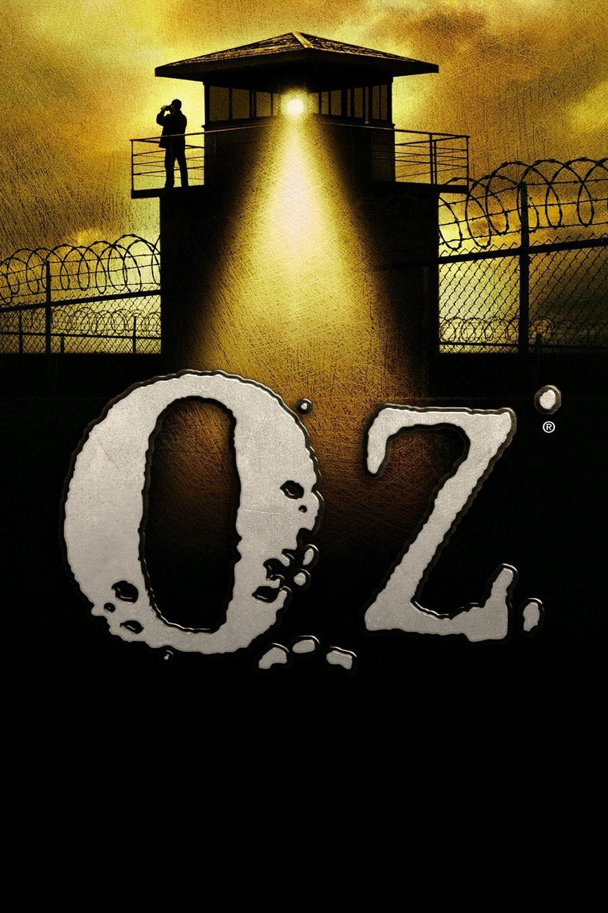
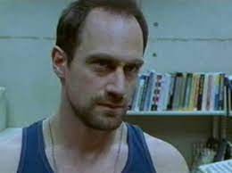
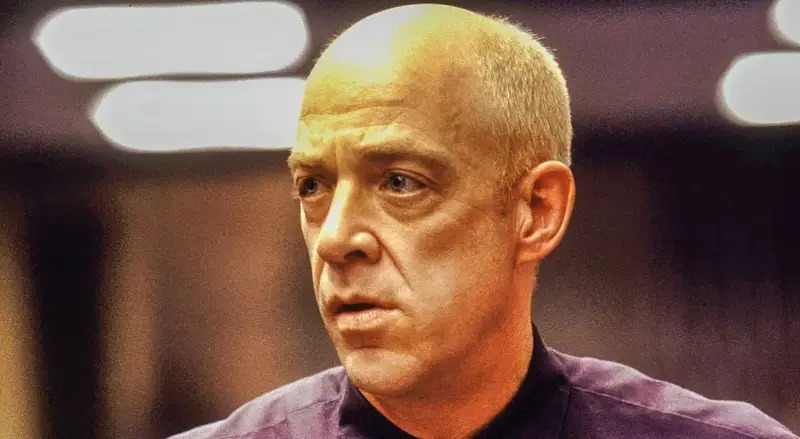

"Oz" is this edgy prison drama set in an experimental wing where inmates get some out-there holistic rehab. Kicking off with a paralyzed guy dropping deep thoughts, it's clear from the get-go – Oz isn't your typical jailhouse show. It's a hardcore, mind-bending look behind bars!
CharactersRanger Chris Keller Played by: CHristopher Meloni James Vernon Schillinger  Played by: J.K. Simmons Augustus Hill Played by: Harold Perrineau |